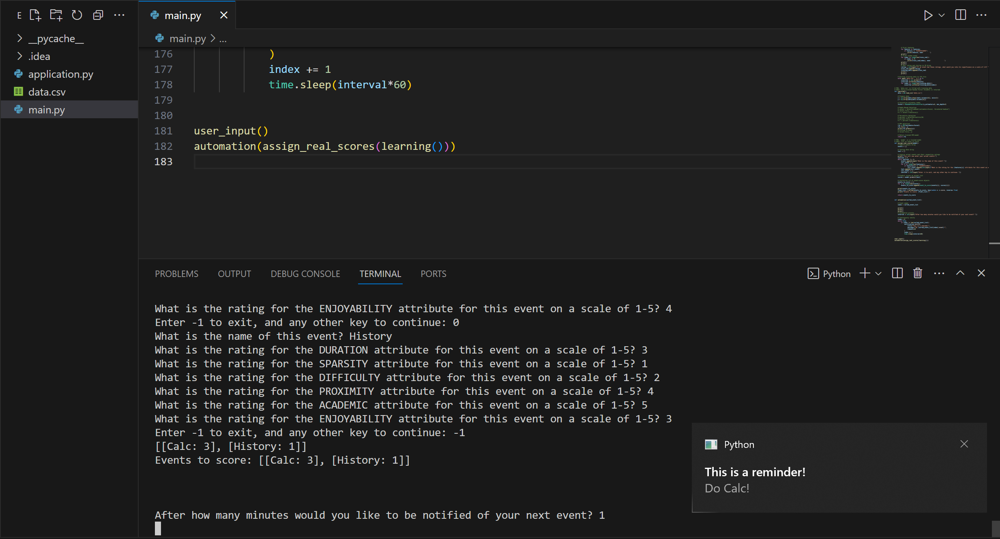

Prioritized To-Do List
program output

program running
program description
this program will comprehend the user's mental proccess for task prioritization by generating random events with different levels of criteon (difficulty, academic factor, time proximity, .etc).
a Random Forest Ensemble, using a Recursive Feature Elimination (RFE) model, will be trained with the results of the prompt to then automatically organize the users' actual to-do list. the program will iterate through the list and remind the user of the next event every 'n' minutes (determined by user)
technologies used